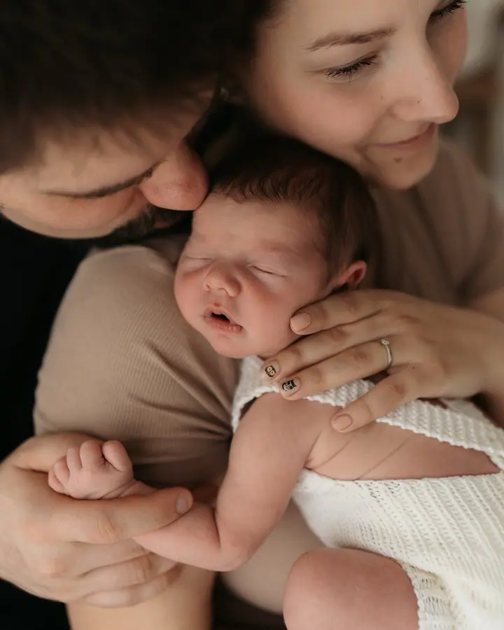
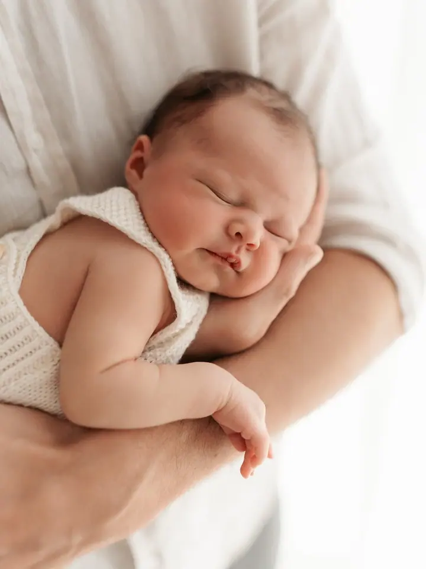
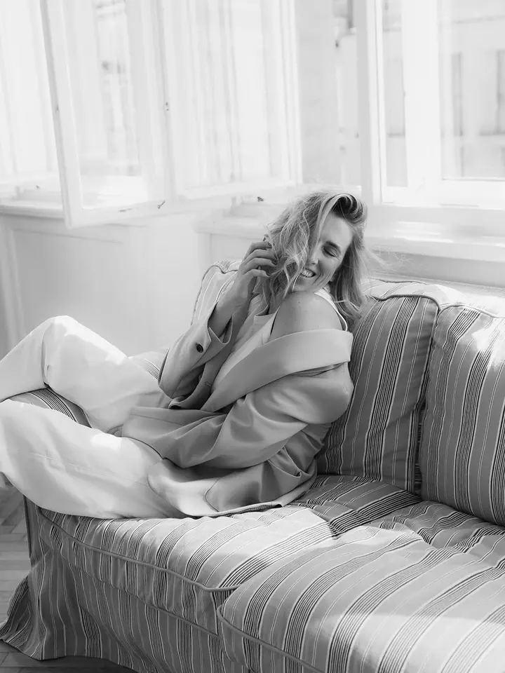

Focení miminek
Novorozenecké focení dělám do 14 dnů od narození, kdy vznikají ty nejjemnější snímky. Probíhá v Líbezném fotostudiu a s miminkem pracuji vždy citlivě a podle jeho potřeb.

Jmenuji se Martina Vydrová a fotím miminka, budoucí maminky a celé rodiny na Kladně, v Praze a okolí. Fotím jemně, s citem pro detail a s pochopením pro to, jak výjimečn…
Rezervovat termínJsem máma a fotografka z Kladna. Až s příchodem mých dětí jsem pochopila, jak moc si jednou budeme přát vrátit se do těch obyčejných dní: k prvním úsměvům, prvním krůčkům a k době, kdy byly děti tak malé.


Specializuji se na miminka, děti a rodiny. Fotím u vás doma, v přírodě nebo v ateliéru. Newborn focení probíhá v Líbezném fotostudiu v Líbeznicích, další ateliérová focení nejčastěji ve Factory Photo studiu nebo ve Fotogramu v Praze.
Detaily jsou pro mě klíčové a vždy hledám ten správný úhel pohledu. Baví mě poznávat nové lidi a jejich příběhy. Chci, abyste se u mě cítili přirozeně, bezpečně a sami sebou, protože právě tehdy vznikají ty nejhezčí fotografie.
Co fotím
Novorozenecké focení dělám do 14 dnů od narození, kdy vznikají ty nejjemnější snímky. Probíhá v Líbezném fotostudiu a s miminkem pracuji vždy citlivě a podle jeho potřeb.
Fotím rodiny a děti tam, kde se cítí nejlépe: u vás doma, v přírodě nebo v ateliéru. Žádné strojené pózy, jen společný čas, kdy můžete být sami sebou.
Jiskřičky v očích budoucích maminek fotím v přírodě i v ateliéru. Do ateliéru chodím nejčastěji do Factory Photo studia, Fotogramu nebo Líbezného fotostudia.
Fotím i svatby a love story páry. Stejně jako u rodin mi jde o opravdové emoce a detaily, ve kterých se skrývá skutečná krása.
Postup
Vyplňte rezervační formulář nebo mi napište zprávu. Ozvu se vám co nejdříve a domluvíme termín.
Společně vybereme, jestli budeme fotit u vás doma, v přírodě nebo v ateliéru. Novorozence fotím do 14 dnů od narození.
Fotíme v klidu a uvolněné atmosféře, tempo přizpůsobím miminku i dětem. Řeknu vám, co dělat, a zbytek necháme plynout.
Fotky pečlivě vyberu a upravím s důrazem na detail. Dostanete je jako památku, ke které se budete rádi vracet.
Otázky
Novorozenecké focení dělám do 14 dnů od narození miminka. V téhle době vznikají ty nejjemnější snímky.
Newborn focení probíhá v Líbezném fotostudiu v Líbeznicích. Rodiny a těhotenské focení fotím u vás doma, v přírodě nebo v pražských ateliérech Factory Photo studio a Fotogram.
S miminkem pracuji vždy s respektem a podle jeho potřeb. Na nakrmení i chování je čas, nikam nespěcháme.
Vůbec ne. Nefotím strojené pózy, jen vás jemně navedu. Chci, abyste byli při focení sami sebou.